Product design case study
Design of a security data pipeline platform to simplify workflows and enhance security operations
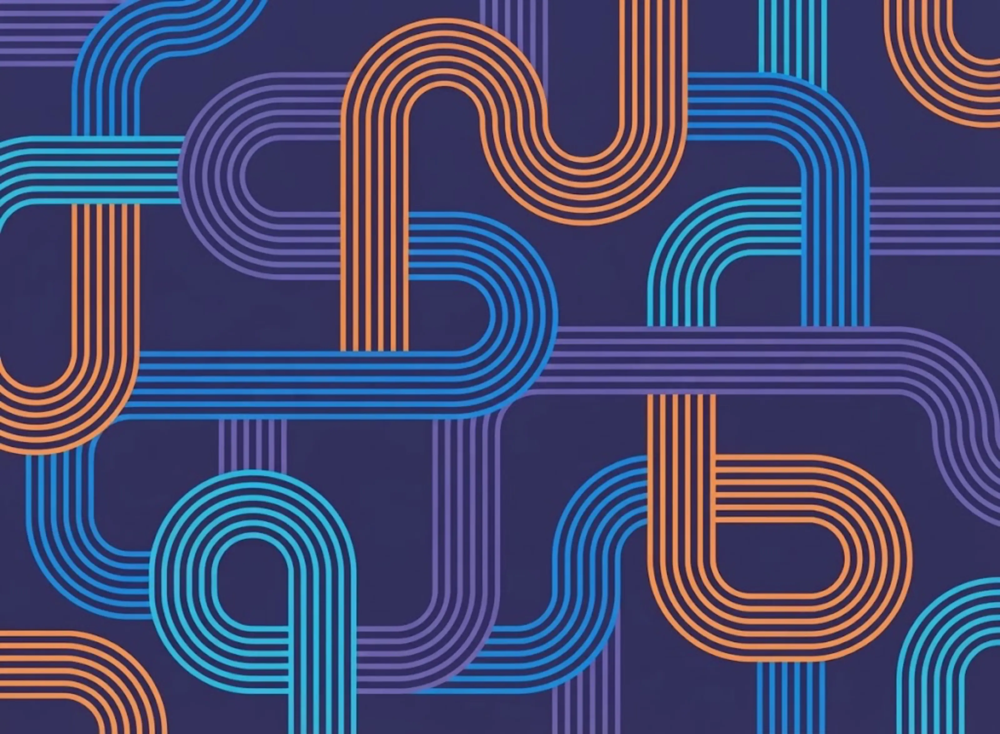
Tenzir is a company that specializes in providing data management solutions for security teams. Their goal is to help organizations efficiently process, analyze, and store large volumes of security data. Key features and functionalities of Tenzir include: data ingestion, data processing, scalability, analytics, storage optimization and integration. I was hired as the first and only Product Designer on the team and tasked to design the MVP.
Security teams face significant challenges in managing large volumes of complex data from multiple, disconnected sources. This leads to inefficiencies in data integration, slow processing speeds, and high storage costs, while limiting their ability to analyze and detect threats quickly. Traditional systems often fail to provide the real-time insights and scalability needed, making it difficult for teams to respond to security incidents in a timely manner.
We designed a platform that simplified data ingestion from multiple sources using Tenzir Query Language (TQL), making it more accessible through prompt-based assistance and easy-to-navigate documentation for quick reference. Users could run and deploy pipelines, and monitor their state in real time, gaining instant visibility into data flow and performance. Additionally, we introduced data visualization capabilities, enabling users to analyze security data more effectively through interactive charts and graphs.
"Our goal was to get a basic version of the product to market quickly to start gathering real-world feedback."
I conducted interviews with internal stakeholders, including the founder, engineering manager, and engineers, to tap into their existing knowledge about user needs, workflows, and design preferences. From these discussions, I developed a clear understanding of the key UI features, design goals, and performance requirements. Our goal was to get a basic version of the product to market quickly to start gathering real-world feedback.
I looked at various interfaces of leading competitors in the cybersecurity data management space to see what they offer, how users experience them and where they could be better. Even though the competition provides powerful and fast search and filtering capabilities, clean and modern UI, and extensive library of visualization options, I have noticed that in most cases the interface appears overwhelming due to its complexity and the large number of features available, making it difficult for new users to navigate. The UI can also be slow, particularly when handling large datasets.
Based on the combination of existing knowledge from internal stakeholders, assumptions based on similar products, and industry insights, I created hypothetical user personas.
Sam, 38
Security Analyst
Works at a mid-sized enterprise, responsible for monitoring security systems, identifying threats, and responding to incidents.
Goals
- To quickly detect and mitigate security threats
- To streamline incident response processes
- To stay updated with the latest cybersecurity trends
Pain Points
- Overwhelming volume of alerts
- Time-consuming data analysis
- Difficulty in correlating data from multiple sources
Behaviors
- Regularly uses data visualization and analysis tools
- Collaborates with IT and incident response teams
- Frequently checks threat intelligence feeds
Emily, 35
Data Scientist
Analyzes large datasets to extract actionable insights and improve security measures.
Goals
- To leverage data for predicting and preventing security incidents
- To develop machine learning models for threat detection
- To improve the accuracy and efficiency of data analysis
Pain Points
- Difficulty in accessing and processing large volumes of data
- Lack of integration between different data sources
- Time-consuming data cleaning and preparation
Behaviors
- Uses advanced analytics and machine learning tools
- Collaborates with security analysts and IT teams
- Regularly updates skills with new data science techniques
Mike, 47
Executive
Oversees the overall security strategy and ensures alignment with business objectives.
Goals
- To ensure the organization is protected from cyber threats
- To achieve a strong return on security investments
- To maintain a positive reputation and comply with regulations
Pain Points
- Balancing security investments with budget constraints
- Limited visibility into technical details of security operations
- Ensuring timely and effective incident response
Behaviors
- Reviews high-level security metrics and reports
- Makes strategic decisions based on risk assessments
- Engages with stakeholders to communicate security posture
Chris, 35
Data Engineer
Builds and maintains the infrastructure required for optimal extraction, transformation, and loading (ETL) of data from various sources.
Goals
- To ensure efficient data pipelines and data integrity
- To integrate multiple data sources seamlessly
- To provide clean, usable data for analysis and reporting
Pain Points
- Managing the complexity of data pipelines
- Ensuring data quality and consistency
- Handling large volumes of data and real-time processing requirements
Behaviors
- Works closely with data scientists and analysts to understand data needs
- Regularly optimizes and troubleshoots data pipelines
- Uses a variety of data engineering tools and platforms
User stories
I focused on several user stories that captured the core functionality needed for the MVP.
As a data engineer I want to…
User flows
I created user flow diagrams for the key user stories by mapping out each step and interaction, ensuring a seamless and intuitive user experience while addressing essential user needs and functionalities.
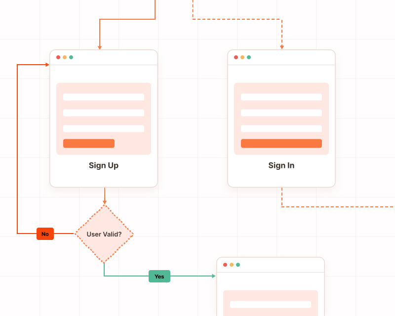
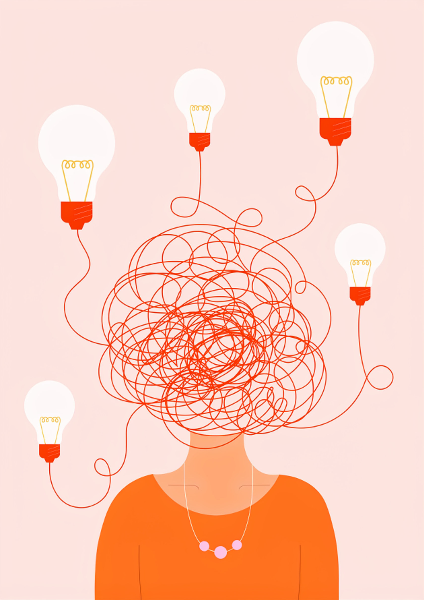
Brainstorming
We then gathered with the product team for a quick brainstorming and sketching out ideas on a whiteboard.
I designed the first design system for Tenzir, establishing guidelines and components to ensure consistency and efficiency across all digital products. This system streamlines the design process, enhances collaboration, and maintains a unified brand identity.
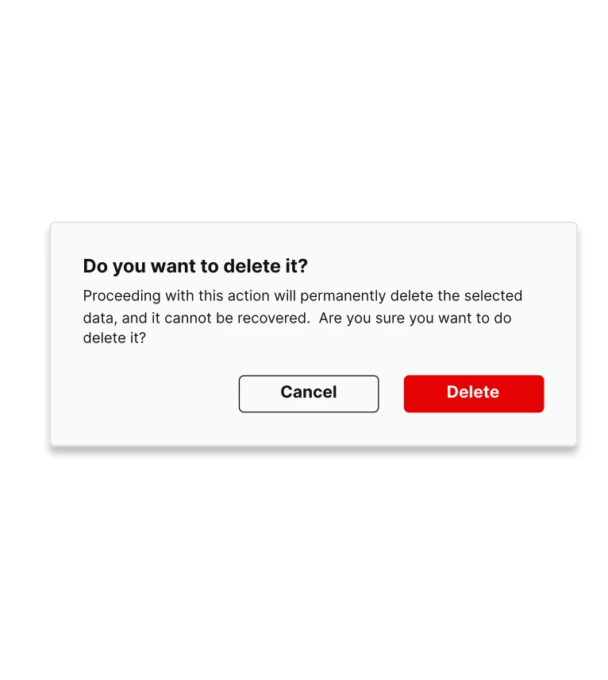
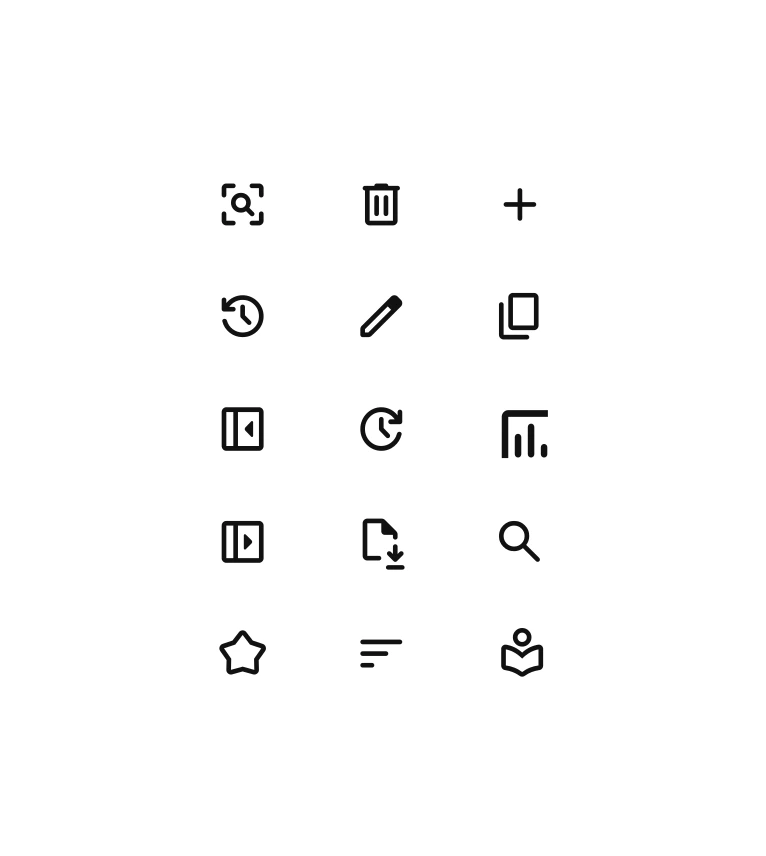
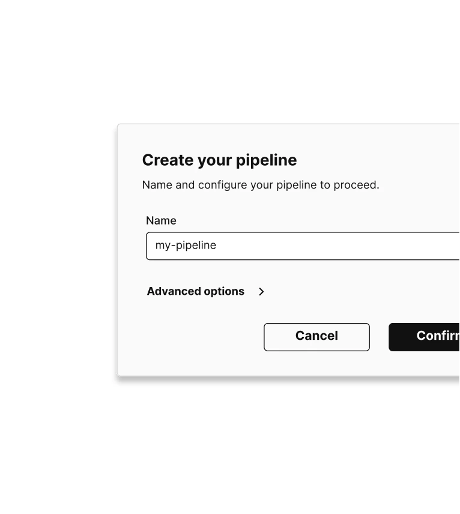
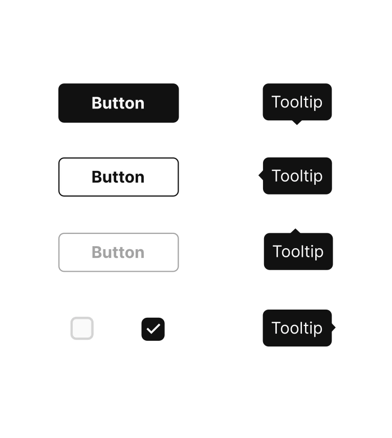
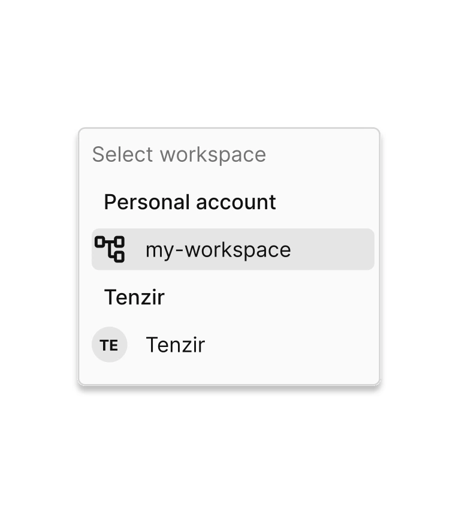
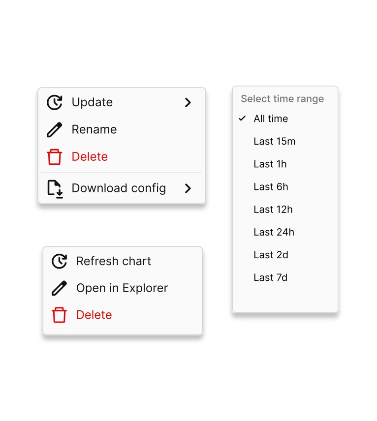
I used Figma to create low-fidelity wireframes that outlined the basic structure and layout without detailed design elements. I focused on arranging key UI elements such as navigation, buttons, forms, and content areas to establish the overall flow and hierarchy. Eventually, I shared the initial wireframes with the product team and stakeholders to gather feedback. I iterated on the designs based on input to refine and improve the layout.
I enhanced the wireframes with more detailed design elements, including typography, icons, and spacing. I also added annotations to explain interactions and functionality. Finally, I created interactive prototypes to simulate user interactions and provide a more realistic preview of the final product. The prototypes were iterated upon multiple times based on feedback and usability testing with the product team, ensuring the design was user-centric and functional.
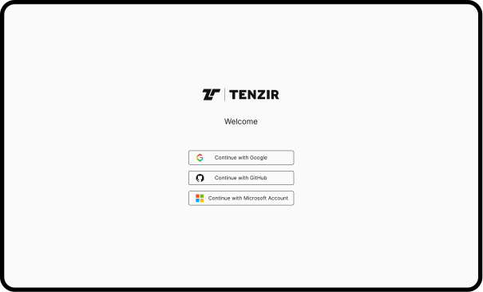
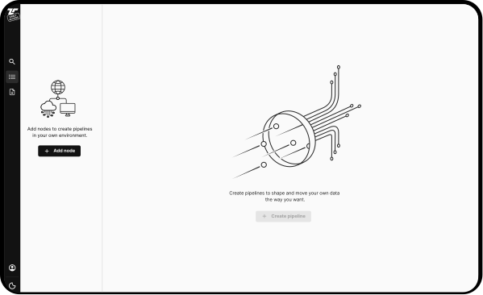
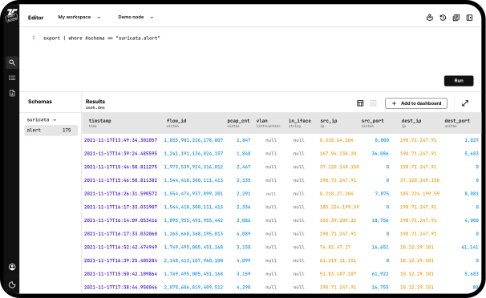
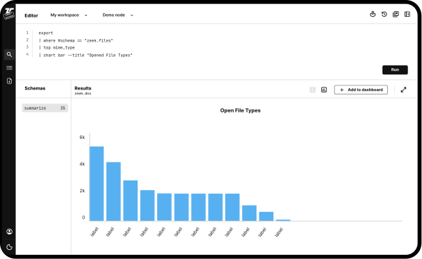
Creating the MVP for Tenzir was a rewarding and insightful experience. Despite limited direct user research, I relied on internal stakeholder interviews and their industry expertise to identify core needs and pain points. Collaborative brainstorming sessions and iterative feedback loops were crucial in refining our ideas and aligning our vision. Developing interactive prototypes allowed us to test and validate assumptions, ensuring a functional, intuitive, and user-centric design. This project emphasized the importance of flexibility, effective communication, and iterative design in creating a successful MVP. It enhanced my skills and deepened my understanding of designing complex data management tools.